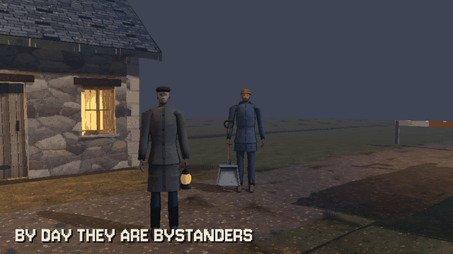

Tutorials › Turn an NPC into an Enemy at Nightfall
How to Turn an NPC into an Enemy at Nightfall in Godot 4
Two bodies of one person, a clip that hands one to the other with no jump, and a darkness value.

The scariest enemy is the one the player walked past an hour ago. A villager is two instances of one model: Day, an ordinary person with its day clips, and Night, the enemy; only one shows at a time. When the darkness from your sky passes turn_at, the day body plays Turn, a clip made to end on the night body's first Idle frame, and on that last frame the night body takes its place in the same pose. At dawn the day body steps back in; a hidden body is also stopped, so it costs nothing.
Script: night_turn.gd (MIT) · Godot 4.3 or newer · its folder on GitHub
How to use it
- Add a
Node3Dand attachnight_turn.gd. Give it two children,DayandNight: two instances of one villager's model, each with its own AnimationPlayer. - The model's clips: the day's (
Day_Idleby default),Turn, which ends on the night's first Idle frame, and the night's (Idle). Rename them inday_idle,turn_clipandnight_idle. - Set
darknessfrom your sky, 0 by day to 1 at night. The villager turns atturn_atand comes back atdawn_at; in between it stays as it is, so a cloud over the moon does not flip it. - Connect
turned(true at nightfall, false at dawn) and give the night body your enemy script.
What it needs
- Godot 4.3 or newer (the Compatibility renderer is enough).
- A rigged character with day clips, a Turn clip and night clips on one skeleton.
Try it free
The free demo on PSX Horror Villagers' page (Download demo) has the ploughman with every clip, day and night, the lean tan dog, both of the pack's scripts and a corner of the village: try the script on the ploughman right away.
How it was tested
In Godot 4.3 and 4.7.2, with the ploughman from the free demo: by day the day body shows; in the dark it plays Turn and the night body takes over in the same pose; at dawn the day body is back; the signal fires both ways.
The code
class_name NightTurn
extends Node3D
## How to Turn an NPC into an Enemy at Nightfall in Godot 4
## Cordatix Godot 4 PSX tutorials, MIT licensed: https://github.com/GoldenSparrow-Dev/cordatix-godot-psx-tutorials
## The devlog: https://cordatix.itch.io/psx-horror-villagers/devlog/1754522/how-to-turn-an-npc-into-an-enemy-at-nightfall-in-godot-4-psx-horror-villagers
## Turn a villager at nightfall in Godot 4.3+: by day one body, by night another, handed over in the same pose.
## Give this node two children, "Day" and "Night": two instances of one villager's model, each with its own
## AnimationPlayer (a PSX Horror Villagers GLB carries both bodies' clips: the day's as Day_<name>, the night's, and
## Turn). The day body plays Turn, a clip that ends on the night's first Idle frame; on that last frame the night body
## takes its place, so the hand-over shows no jump. Set `darkness` from your sky, 0 (day) to 1 (night): the villager
## turns when it reaches turn_at and comes back when it falls to dawn_at (in between it stays as it is).
signal turned(night: bool)
@export_range(0.0, 1.0) var darkness := 0.0
@export var turn_at := 0.6
@export var dawn_at := 0.35
@export var day_idle := "Day_Idle"
@export var turn_clip := "Turn"
@export var night_idle := "Idle"
var is_night := false
var _turning := false
@onready var day: Node3D = $Day
@onready var night: Node3D = $Night
func _ready() -> void:
_play(day, day_idle)
_play(night, night_idle)
_show(day, night)
func _physics_process(_delta: float) -> void:
if _turning:
return
if not is_night and darkness >= turn_at:
_turn()
elif is_night and darkness <= dawn_at:
_back()
func _turn() -> void:
_turning = true
var ap := _anim(day)
if ap and ap.has_animation(turn_clip):
ap.play(turn_clip, 0.2)
await ap.animation_finished # Turn's last frame: the night's first Idle pose
night.global_transform = day.global_transform
_play(night, night_idle)
_anim(night).seek(0.0, true)
_show(night, day)
is_night = true
_turning = false
turned.emit(true)
func _back() -> void:
day.global_transform = night.global_transform
_play(day, day_idle)
_show(day, night)
is_night = false
turned.emit(false)
func _show(on: Node3D, off: Node3D) -> void:
off.visible = false
off.process_mode = Node.PROCESS_MODE_DISABLED
on.visible = true
on.process_mode = Node.PROCESS_MODE_INHERIT
func _play(body: Node3D, clip: String) -> void:
var ap := _anim(body)
if ap and ap.has_animation(clip):
ap.play(clip)
func _anim(body: Node3D) -> AnimationPlayer:
return body.find_child("AnimationPlayer", true, false) as AnimationPlayer
The devlog and the pack
The step-by-step walkthrough is the devlog How to Turn an NPC into an Enemy at Nightfall in Godot 4 (PSX Horror Villagers) on itch.io, written for PSX Horror Villagers, a PS1-style asset pack by Cordatix for Godot 4, Unity, Unreal and Blender.